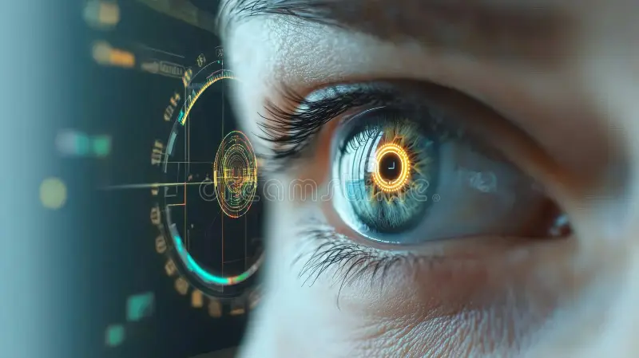

O que é rastreamento ocular por IA?
O rastreamento ocular concentra-se em três comportamentos principais: fixações, sacadas e dilatação da pupila. As fixações ocorrem quando seus olhos param em um ponto específico por 100 a 500 milissegundos, indicando que seu cérebro está processando essa informação.
Os movimentos sacádicos são saltos rápidos entre fixações, geralmente durando de 20 a 40 milissegundos, quando o cérebro processa muito pouca informação. A dilatação da pupila — a mudança no tamanho das pupilas — geralmente indica resposta emocional, carga cognitiva ou nível de interesse.
Os sistemas de rastreamento ocular atuais se dividem em três categorias principais.
- Os rastreadores baseados em tela são fixados aos monitores e capturam os movimentos oculares enquanto os usuários visualizam conteúdo digital.
- Os sistemas vestíveis são frequentemente integrados em óculos e permitem movimentos naturais e observação do mundo real.
- O rastreamento ocular baseado em webcam é a versão mais recente e utiliza webcams padrão em vez de hardware especializado, tornando-o acessível a praticamente qualquer pessoa com um computador.

Como funciona a tecnologia de rastreamento ocular
A maioria dos sistemas modernos de rastreamento ocular utiliza luz infravermelha próxima e câmeras
especializadas para rastrear o movimento dos olhos com notável precisão.
A tecnologia funciona
direcionando luz infravermelha invisível para o olho, criando reflexos na córnea (a camada externa
transparente do olho). Esses reflexos, juntamente com a posição da pupila, são capturados por câmeras
sensíveis ao infravermelho.

rastreamento da reflexão da córnea
O método mais comum, conhecido como rastreamento da reflexão da córnea, baseia-se no contraste entre essas
reflexões e a pupila. Quando a luz infravermelha atinge o olho, cria uma pequena reflexão brilhante na
córnea, chamada de "brilho" ou "primeira imagem de Purkinje".
O sistema mede a relação variável
entre esse brilho e o centro da sua pupila conforme seus olhos se movem. Como o reflexo da córnea permanece
relativamente estável enquanto a pupila se move, essa diferença ajuda a calcular com precisão para onde você
está olhando.

Tipos diferentes de sistemas
O hardware varia conforme o tipo de sistema. Os rastreadores baseados em tela posicionam câmeras e
iluminadores infravermelhos abaixo ou dentro do monitor. Sistemas vestíveis, como óculos, incorporam versões
miniaturizadas desses componentes para capturar seu campo de visão juntamente com os movimentos dos seus
olhos.
Sistemas baseados em webcam utilizam a câmera do seu computador, mas sacrificam um pouco da
precisão em comparação com hardware dedicado.